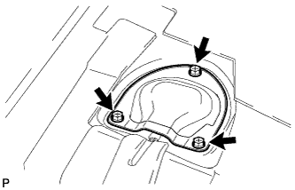
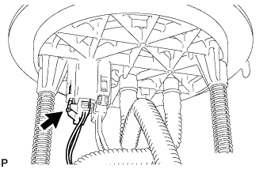
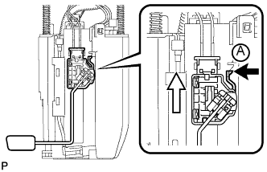
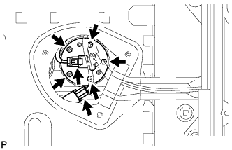

ДАТЧИК УРОВНЯ ТОПЛИВА В СБОРЕ (для моделей с одиночным баком) > СНЯТИЕ |
| 1. СНИМИТЕ ТОПЛИВОЗАБОРНИК С БЕНЗОНАСОСОМ И ДАТЧИКОМ УРОВНЯ ТОПЛИВА В СБОРЕ (для 5-дверных моделей) |
Снимите топливозаборник с бензонасосом и датчиком уровня топлива в сборе (Нажмите здесь).
| 2. СНИМИТЕ ОПОРНУЮ ПЛАСТИНУ КОВРИКА ЗАДНЕГО ПОЛА (для 3-дверных моделей) |
 |
Выверните 5 винтов.
Освободите 6 захватов и снимите заднюю опорную пластину коврика заднего пола.
| 3. СНИМИТЕ КРЫШКУ ТЕХНОЛОГИЧЕСКОГО ОТВЕРСТИЯ ЗАДНЕГО ПОЛА (для 3-дверных моделей) |
|  |
Выверните 3 винта и снимите крышку технологического отверстия заднего пола.
| 4. СНИМИТЕ ДАТЧИК УРОВНЯ ТОПЛИВА В СБОРЕ (для 5-дверных моделей) |
|  |
Отсоедините разъем датчика уровня топлива.
|  |
Нажмите на захват датчика уровня топлива А. Затем сдвиньте датчик вверх, чтобы снять его.
 | Нажмите |
 | Сдвиньте |
| 5. СНИМИТЕ ДАТЧИК УРОВНЯ ТОПЛИВА В СБОРЕ (для 3-дверных моделей) |
|  |
Отсоедините разъем датчика уровня топлива и разъем топливного насоса.
Выверните 5 винтов и снимите датчик уровня топлива.
Снимите прокладку с датчика уровня топлива.